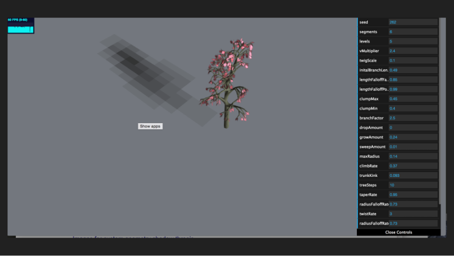
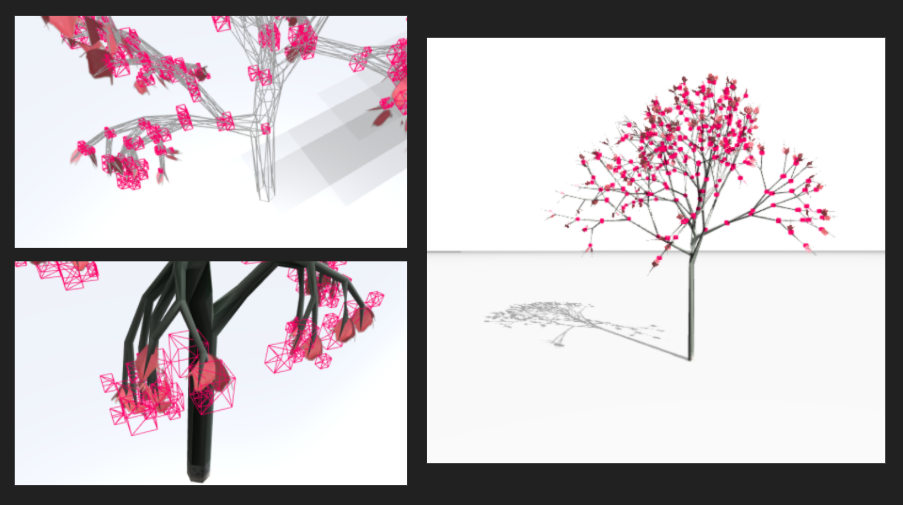
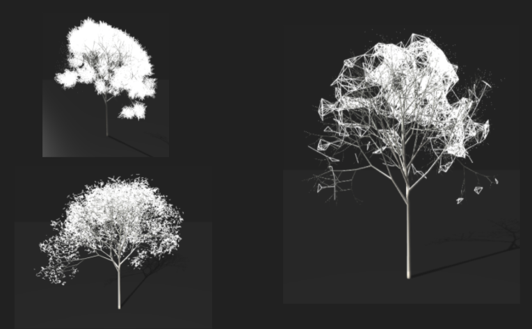

Particle Tree (2017)
Creative Coding
three.js, computational geometry, 3D modeling
Nature of Code
A 3D tree mesh is analyzed using octree spatial partitioning to find the tips of branches (leaves) grouped by vertices. Colored dancing particles attract and repulse from the leaves in cheerful music. Coded in Three.JS.
Inspiration
A tree is a beautiful attractor in nature. This project aims to study attractors by modeling different stages of attraction and repulsion. When attractors are positive, particles move with direction and purpose. When attractors are dampened, particles slow and ease. When there are waves of strong alternating attraction and repulsion, particles ebb and flow like waves and can become chaotic. When attractors are negative, particles slowly repulse and depart away.
Technicals
A procedural tree is generated using a library (proctree.js) which helped create tree meshes given a set of parameters. However, the specific locations of branches or twigs cannot be identified from sets of vertices, faces, UVs, and normals.

I decided to use a spacial algorithm known as an octree that can split a larger cube into eight octants if a vertex is contained within any of the octants. If it is, the point is added to that octant and that octant is recursively subdivided until a max-depth level is reached. We can then search the tree for the last leaf nodes (or last few levels) for the smallest boxes that encompass the vertices. This demonstrated the viability of using the octree algorithm to find clusters of vertices. The final bounding boxes represent vertices clustered closely together, which ended up being where the leaves and branches were modeled.

Some generative art using our newly computed data.

Our final task is to model attraction. The attraction model was adapted and adjusted from the book Generative Design by Hartmut Bohnacker.
Attraction parameters are adjusted based on time to model the different stages of attraction and repulsion and scripted using THREE.JS.